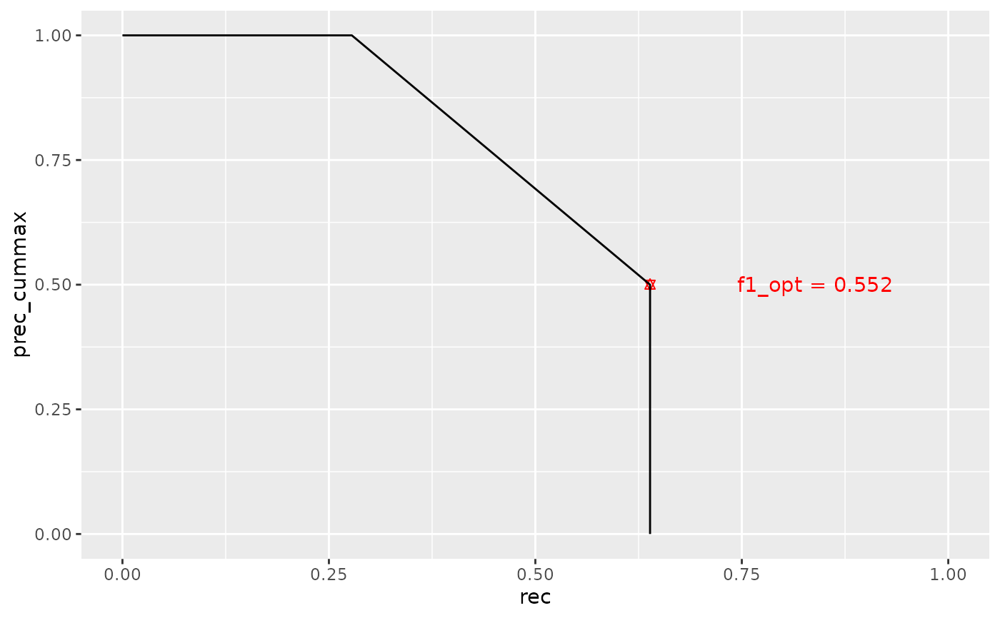

compute_pr_curve.RdCompute the precision-recall curve for a given step size and limit range.
compute_pr_curve(
predicted,
gold_standard,
doc_groups = NULL,
label_groups = NULL,
mode = "doc-avg",
steps = 100,
thresholds = NULL,
limit_range = NA_real_,
optimize_cutoff = FALSE,
graded_relevance = FALSE,
propensity_scored = FALSE,
label_distribution = NULL,
cost_fp_constant = NULL,
replace_zero_division_with = options::opt("replace_zero_division_with"),
drop_empty_groups = options::opt("drop_empty_groups"),
ignore_inconsistencies = options::opt("ignore_inconsistencies"),
verbose = options::opt("verbose"),
progress = options::opt("progress")
)Multi-label prediction results. Expects a data.frame with
columns "label_id", "doc_id", "score".
Expects a data.frame with columns "label_id",
"doc_id".
A two-column data.frame with a column "doc_id" and a
second column defining groups of documents to stratify results by. It is
recommended that groups are of type factor so that levels are not
implicitly dropped during bootstrap replications.
A two-column data.frame with a column "label_id"
and a second column defining groups of labels to stratify results by.
Results in each stratum will restrict gold standard and predictions to the
specified label groups as if the vocabulary was consisting of the label
group only. All modes "doc-avg", "subj-avg", "micro" are supported
within label strata. Nevertheless, mixing mode = "doc-avg" with
fine-grained label strata can result in many missing values on
document-level results. Also rank-based thresholding (e.g. top 5) will
result in inhomogeneous numbers of labels per document within the defined
label strata. mode = "subj-avg" or mode = "micro" can be more
appropriate in these circumstances.
One of the following aggregation modes: "doc-avg",
"subj-avg", "micro".
Number of breaks to divide the interval \([0, 1]\) into. These breaks will be used as quantiles to be calculated on the true positive suggestions' score distribution and therefore build one axis of the grid for computing the pr curve.
Alternatively to steps, one can manually set the thresholds
to be used to build the pr curve. Defaults to the quantiles of the true
positive suggestions' score distribution to be obtained from steps.
A vector of limit values to apply on the rank column. Defaults to NA, applying no cutoff on the predictions' label rank.
Logical. If TRUE, a grid search in the search
space specified by limit_range and steps or thresholds
is performed to find optimal limit and threshold with respect to F1
measure.
A logical indicator for graded relevance. Defaults to
FALSE for binary relevance. If set to TRUE, the
predicted data.frame should contain a numeric column
"relevance" with values in the range of \([0, 1]\).
Logical, whether to use propensity scores as weights.
Expects a data.frame with columns "label_id",
"label_freq", "n_docs". label_freq corresponds to the number of
occurences a label has in the gold standard. n_docs corresponds to
the total number of documents in the gold standard.
Constant cost assigned to false positives.
cost_fp_constant must be a numeric value > 0 or one of 'max', 'min',
'mean' (computed with reference to the gold_standard label
distribution). Defaults to NULL, i.e. label weights are applied to false
positives in the same way as to false negatives and true positives.
In macro averaged results (doc-avg, subj-avg), it may occur that some
instances have no predictions or no gold standard. In these cases,
calculating precision and recall may lead to division by zero. CASIMiR
standardly removes these missing values from macro averages, leading to a
smaller support (count of instances that were averaged). Other
implementations of macro averaged precision and recall default to 0 in these
cases. This option allows to control the default. Set any value between 0
and 1. (Defaults to NULL, overwritable using option 'casimir.replace_zero_division_with' or environment variable 'R_CASIMIR_REPLACE_ZERO_DIVISION_WITH')
Should empty levels of factor variables be dropped in grouped set retrieval
computation? (Defaults to TRUE, overwritable using option 'casimir.drop_empty_groups' or environment variable 'R_CASIMIR_DROP_EMPTY_GROUPS')
Warnings about data inconsistencies will be silenced. (Defaults to FALSE, overwritable using option 'casimir.ignore_inconsistencies' or environment variable 'R_CASIMIR_IGNORE_INCONSISTENCIES')
Verbose reporting of computation steps for debugging. (Defaults to FALSE, overwritable using option 'casimir.verbose' or environment variable 'R_CASIMIR_VERBOSE')
Display progress bars for iterated computations (like bootstrap CI or
pr curves). (Defaults to FALSE, overwritable using option 'casimir.progress' or environment variable 'R_CASIMIR_PROGRESS')
A list of three elements:
plot_data A data.frame with full pr curves and columns
"searchspace_id", "prec", "rec", "prec_cummax", "mode".
opt_cutoff A data.frame with optimal cutoffs and columns
"thresholds", "limits", "searchspace_id", "f1_max", "prec",
"rec", "prec_cummax", "mode".
all_cutoffs A data.frame with all cutoffs and columns
"thresholds", "limits", "searchspace_id", "metric", "value",
"support", "f1_max", "prec", "rec", "prec_cummax", "mode".
All three data.frames may contain additional stratification variables
passed with doc_groups and label_groups. The latter two
data.frames are non-empty only if optimize_cutoff == TRUE.
library(ggplot2)
library(casimir)
gold <- tibble::tribble(
~doc_id, ~label_id,
"A", "a",
"A", "b",
"A", "c",
"B", "a",
"B", "d",
"C", "a",
"C", "b",
"C", "d",
"C", "f"
)
pred <- tibble::tribble(
~doc_id, ~label_id, ~score, ~rank,
"A", "a", 0.9, 1,
"A", "d", 0.7, 2,
"A", "f", 0.3, 3,
"A", "c", 0.1, 4,
"B", "a", 0.8, 1,
"B", "e", 0.6, 2,
"B", "d", 0.1, 3,
"C", "f", 0.1, 1,
"C", "c", 0.2, 2,
"C", "e", 0.2, 2
)
pr_curve <- compute_pr_curve(
pred,
gold,
mode = "doc-avg",
optimize_cutoff = TRUE
)
auc <- compute_pr_auc_from_curve(pr_curve$plot_data)
# note that pr curves take the cummax(prec), not the precision
ggplot(pr_curve$plot_data, aes(x = rec, y = prec_cummax)) +
geom_point(
data = pr_curve$opt_cutoff,
aes(x = rec, y = prec_cummax),
color = "red",
shape = "star"
) +
geom_text(
data = pr_curve$opt_cutoff,
aes(
x = rec + 0.2, y = prec_cummax,
label = paste("f1_opt =", round(f1_max, 3))
),
color = "red"
) +
geom_path() +
coord_cartesian(xlim = c(0, 1), ylim = c(0, 1))
